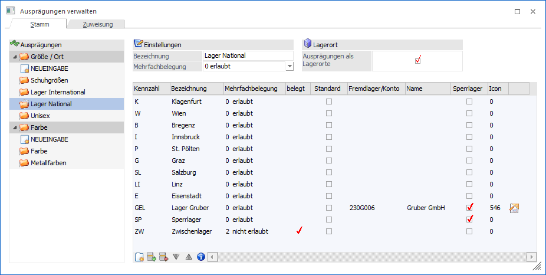
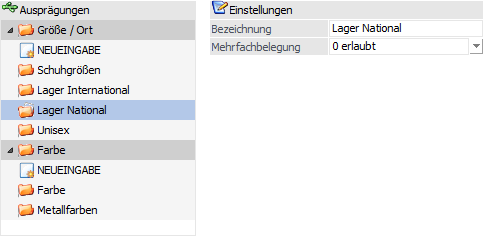
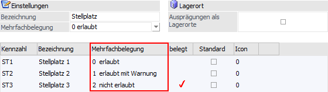
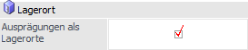
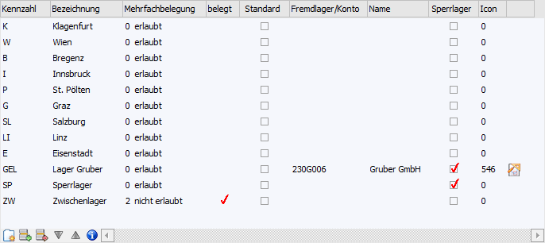
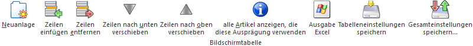

In dem Register "Stamm" werden die Ausprägungsgruppen, sowie die einzelnen Ausprägungen, definiert.

Ausprägungsgruppe

Ø Ausprägungen
Die Ausprägungsgruppen werden in einer Tabellenstruktur im linken Bereich des Fensters dargestellt und hängen dabei unter dem Punkt Ausprägung 1 (hier "Größe / Ort") oder Ausprägung 2 (hier "Farbe"). Bei Anwahl einer Gruppe werden im rechten Bereich des Fensters die entsprechenden Einstellungen und die zugehörigen Ausprägungen angezeigt.
Hinweis
Durch Anwahl des Punktes "NEUEINGABE" (unter Ausprägung 1 und Ausprägung 2 zu finden) kann eine neue Ausprägungsgruppe angelegt werden.
Ø Bezeichnung
An dieser Stelle wird der Name der Ausprägungsgruppe hinterlegt.
Ø Mehrfachbelegung
Durch diese Option wird definiert, ob eine Ausprägung nur von einem Artikel belegt werden kann. Hierbei stehen folgende Auswahlmöglichkeiten zur Verfügung:
ü 0 - erlaubt
Es können beliebig
viele unterschiedliche Artikel auf die Ausprägung gebucht werden.
ü 1 - erlaubt mit Warnung
Es
können beliebig viele unterschiedliche Artikel auf die Ausprägung gebucht
werden, aber es erfolgt eine Warnung sollte schon ein anderer Artikel zuvor auf
diese Ausprägung gebucht worden sein.
ü 2 - nicht erlaubt
Es kann nur
ein Artikel pro Ausprägung gebucht werden.
Hinweis
Die Einstellung in der Ausprägungsgruppe wird als Vorschlag in die einzelnen Ausprägungen übernommen und kann dort angepasst werden.
Hinweis 2
In der Spalte "belegt" der Ausprägungstabelle wird durch ein Häkchen symbolisiert, dass diese Ausprägung bereits belegt ist. Wenn die Option auf "erlaubt" steht scheint nie ein Häkchen auf.
Beispiel
Verschiedene Stellplätze werden als Ausprägung angelegt, d.h. die Artikel werden je nach Lagerung auf einen bestimmten Stellplatz gebucht. Optional kann jetzt gesteuert werden ob verschiedene Artikel auf denselben Stellplatz gebucht werden dürfen.

Lagerort

Ø Ausprägungen als Lagerorte
Durch Aktivierung der Option "Ausprägungen als Lagerorte" stehen die Ausprägungen im Menüpunkt "Lagerorte bearbeiten" zur Verfügung. Des Weiteren werden in der Ausprägungstabelle die folgenden Spalten zusätzlich angeboten (z.B. um Fremdlagerorte zu definieren):
ü Fremdlager / Konto
ü Name
ü Sperrlager
Tabelle "Ausprägungen"

In der Tabelle werden die einzelnen Ausprägungen verwaltet. Folgende Spalten stehen hierfür zur Verfügung:
Ø Kennzahl
An dieser Stelle wird die Kennzahl (auch "Kurzcode" genannt) hinterlegt. Die Länge ist dabei abhängig von der Einstellung "Kennzahllänge" aus dem Programm "Ausprägungen initialisieren").
Hinweis zur Änderung von Kennzahlen
Werden Kennzahlen geändert, die in bestehenden Ausprägungen verwendet werden, so erfolgt nach Änderung der Kennzahl eine Abfrage, ob die zugehörigen Artikel umnummeriert werden sollen. Wird diese Abfrage mit "Ja" bestätigt, so öffnet sich nach Drücken des Buttons "Ok" das Fenster "Umnummerieren von Artikelnummer" und beinhaltet in der Tabelle bereits alle Ausprägungsartikel, die diese Ausprägung verwenden. Des Weiteren wird automatisch die neue Artikelnummer (bestehend aus Artikelnummer und der neuen Ausprägungskennzahl) vorgeschlagen.
Ø Bezeichnung
An dieser Stelle wird die Bezeichnung der Ausprägung hinterlegt.
Ø Mehrfachbelegung
Durch diese Option wird definiert, ob eine Ausprägung nur von einem Artikel belegt werden kann. Hierbei stehen folgende Auswahlmöglichkeiten zur Verfügung:
ü 0 - erlaubt
Es können beliebig
viele unterschiedliche Artikel auf die Ausprägung gebucht werden.
ü 1 - erlaubt mit Warnung
Es
können beliebig viele unterschiedliche Artikel auf die Ausprägung gebucht
werden, aber es erfolgt ein Warnung sollte schon ein anderer Artikel zuvor auf
diese Ausprägung gebucht worden sein.
ü 2 - nicht erlaubt
Es kann nur
ein Artikel pro Ausprägung gebucht werden.
Hinweis
In der Spalte "belegt" der Ausprägungstabelle wird durch ein Häkchen symbolisiert, dass diese Ausprägung bereits belegt ist. Wenn die Option auf "erlaubt" steht scheint nie ein Häkchen auf.
Beispiel
Verschiedene Stellplätze werden als Ausprägung angelegt, d.h. die Artikel werden je nach Lagerung auf einen bestimmten Stellplatz gebucht. Optional kann jetzt gesteuert werden ob verschiedene Artikel auf denselben Stellplatz gebucht werden dürfen.
Ø belegt
Wenn eine Ausprägung von einem Artikel belegt ist, dann wird
auf dieses durch das Symbol  hingewiesen.
hingewiesen.
Hinweis
Über das Programm "Lagerverfügbarkeit berechnen" (WinLine FAKT - Stammdaten - Ausprägungen) kann die Belegung geprüft / neu berechnet werden.
Ø Standard
Diese Option kann nur einmal pro Ausprägungsgruppe bei einer Ausprägung aktiviert werden und legt fest, welche Ausprägung als Standardausprägung im Artikelstamm während der Neuanlage vorgeschlagen werden soll.
Hinweis
Dieser Vorschlag kann im Artikelstamm editiert werden.
Ø Fremdlager/Konto
An dieser Stelle kann eine eindeutige Zuordnung zwischen einem Lagerort und einem Personenkonto getroffen werden. Diese Zuordnung wird an folgenden Stellen berücksichtigt:
ü "Kundenlager berücksichtigen" in den Ausprägungsvorlagen (WinLine FAKT - Stammdaten - Ausprägungen - Ausprägungen initialisieren - Register "Vorlagen") bzw. dem Fenster "Ausprägungen erfassen"
ü "Belege erzeugen" im Programm "Lagerumbuchung"
ü als Information in der "Verfügbarkeitsliste" (WinLine PPS)
ü zur Bildung von automatischen Umbuchungszeilen im Programm "Lagerumbuchung" (Abbildung einer Fremdfertigung)
Ø Name
An dieser Stelle wird der Kontoname des hinterlegten Fremdlagers / Kontos angezeigt.
Ø Sperrlager
Bei Aktivierung dieser Option werden sogenannte Sperrlagerzeilen geschrieben, wenn die Ausprägung über die "Lagerbuchhaltung", die "Lagerumbuchung" oder bei der Umbuchung im Menüpunkt "Lagerorte bearbeiten" bebucht wird.
Diese Sperrlagerzeilen werden in der Folge bei der Berechnung der verfügbaren Menge berücksichtigt, z.B. im Menüpunkt "Kundenbestellungen bearbeiten", in der Belegerfassung (bei der Prüfung auf Unterschreitung falls dieses in der Belegart definiert wurde bzw. beim Restmengenvorschlag) oder im "Bestellvorschlag erstellen".
Eine Ausweisung der Sperrlagerzeilen erfolgt in der Artikelbedarfsvorschau und in der Artikelbedarfsliste.
Hinweis
In der verwendeten Lagerbuchungsart muss die Option "Sperrlager" aktiviert sein.
Ø Icon
Mittels des Lupen-Symbols oder der Taste F9 kann aus einem Auswahlfenster eine Grafik als Kennzeichen für die jeweilige Ausprägung und für den Andruck bzw. die Anzeige in der "Verfügbarkeitsliste" hinterlegt werden.
In der Spalte rechts von der Icon-Auswahl wird das gewählte Symbol dargestellt.
Tabellenbuttons

Ø Neuanlage
Durch Anwahl des Buttons "Neuanlage" kann eine neue Ausprägung am Ende der Ausprägungstabelle angefügt werden.
Ø Zeilen einfügen
Durch Anwahl dieses Buttons kann eine neue Ausprägung eingefügt werden.
Ø Zeilen entfernen
Durch Anwahl dieses Buttons können einzelne Ausprägungen gelöscht werden.
Hinweis
Ein Löschen einer Ausprägung ist nur möglich, wenn diese in keinem Artikel mehr verwendet wird.
Ø Zeilen nach oben verschieben / Zeilen nach unten verschieben
Mittels dieser Buttons können Ausprägungen nach oben bzw. nach unten verschoben werden.
Ø alle Artikel anzeigen, die diese Ausprägung verwenden
Durch Anwahl des Buttons wird eine Liste am Bildschirm ausgegeben, auf welcher alle Artikel gelistet werden, bei denen die aktuell markierte Ausprägung verwendet wird.
Ø Ausgabe Excel
Durch Anwahl des Buttons "Ausgabe Excel" wird der Inhalt der Tabelle an Microsoft Excel übergeben.
Ø Tabelleneinstellungen speichern
Die Spalten einer Tabelle können grundsätzlich an beliebige Positionen verschoben, bzw. in der Breite entsprechend angepasst werden. Durch Anwahl des Buttons "Tabelleneinstellungen speichern" werden die Einstellungen benutzerspezifisch gespeichert und bei dem nächsten Aufruf des Programmpunktes wieder vorgeschlagen.
Ø Gesamteinstellungen speichern
Im Gegensatz zu "Tabelleneinstellungen speichern" können mit "Gesamteinstellungen speichern" mehrere Tabellenaufbauten gespeichert und nach Wunsch geladen werden. Zusätzlich werden Sonderfunktionen der Tabelle (z.B. "Spalte gruppieren") ebenfalls bei der Speicherung bedacht.